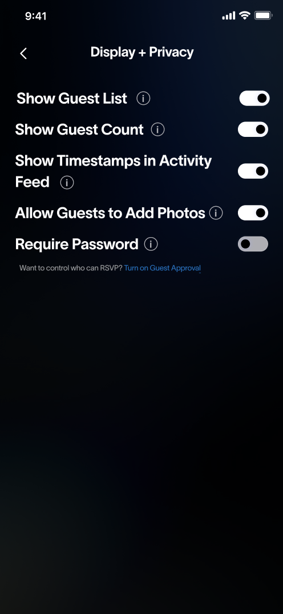
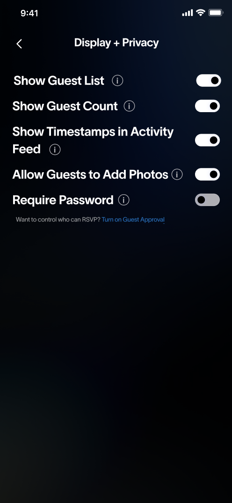

For this project, I worked in a group of four on a redesign for Partiful, an event planning website. This project was especially cool because we had the opportunity to collaborate with real designers at Partiful on a design problem that they were struggling with. Specifically, Partiful asked us to reimagine the settings of their mobile app. Despite having helpful settings, Partiful noticed that users were not utilizing the settings to their full extent or were even aware of the existence of many of the settings. The end goal was to create a high-fidelity prototype in Figma of our redesigned Event Settings page that would enhance the user experience of navigating the settings. However, before we could reach this end goal, we had to go through iterations of sketchings, low-fidelity wireframes, and critiques, detailed below.
Evaluating the Current Product
Partiful is a new event planning site aimed at younger generations. Thus, as college students we were already familiar with the product. However, many of us had not used the settings page! Additionally, Partiful asked us to specifically look at the mobile version, which was new to us. We spent an hour or two becoming familiar with the Event Planning page and connected Event Settings page. The problem statement Partiful gave to us was: “How might we make event settings more prominent and easier to navigate for hosts?” This was the underlying question we kept in mind throughout. The current Partiful app is shown below for reference.


After becoming familiar with the interface, we noticed a few changes we already knew we wanted to make.
- The horizontal scroll bar the top of the Event Settings page hid some of the settings
- The Event Settings pages were too wordy and overwhelming
Sketching and Low Fidelity Wireframing
Sketching
Before focusing on the specific aspects of the application settings that we were going to tackle, we first each sketched 2 flows of how we envisioned the feauture could be improved. My sketches are included below.
Low Fidelity Wireframing
We used our sketches as starting point for our first design and low-fidelity wireframe. Based on the ideas generated from the sketches, there were a couple we knew we really liked:
- Making the Event Settings similar to Apple settings in that the user can see all the setting groups at once then go into them specifically
- Using an information button to hide excess information but still have it available if the user wants it
In the end, we decided to go with a design that mimics the iPhone settings application. We realized that we wanted to prioritize ease of use for the users, and a setting page with this style allowed for familiarity. After discussing it, we also decided to remove Chip In and Add Co-Hosts from this section because it already exists in the main Create Event page. Finally, since we noticed that some of the info about each setting was wordy and tended to distract and confuse users, we decided to add an info button that, when pressed, displays information about that specific setting. The wireframes are shown below. Each of us was responsible for creating one of the Event Settings pages in the lofi. I did the Display & Privacy page.
 



Making the High-Fidelity Prototype
Feedback
Before moving onto creating the high-fidelity prototype, we wanted to get feedback on the low-fidelity wireframe from our peers and our contacts at Partiful. In general, the feedback we recieved as positive, especially about changing the layout to be similar to iPhone settings. The designers at Partiful and our peers also agreed that the text could be condensed into info buttons. However, they did tell us that it might be annoying for users to have to click on each individual info button and that we should decide how the screen changes when it's pressed. Additionally, the designers at Partiful suggested we keep "Add Cohosts" and "Chip-In" on the Event Settings page so that users can access these features even when not in the "Edit Event" page.
High-Fidelity Prototype
Based on the feedback we received, we decided to change the information buttons to be one information button at the top of the page that would show the information for all the settings at once. We also decided to add back the "Add Cohosts" and "Chip-In" sections for the reasons the Partiful designers explained. When making the high-fidelity prototype, we each took two of the settings pages to handle. I worked on "Display & Privacy" and "Auto-Reminders".

Partiful Designer Feedback & Revisions
The final step of this project was to present our finished high-fidelity prototype to the designers at Partiful. When we met with the Partiful designers, we received positive feedback in general! They agreed that going with a settings format similar to Apple was a good choice since many users are already familiar with it. Additionally, they agreed that the original design had an overwhelming amount of text and supported our decision to hide the excess text with the information button. One piece of feedback we received was that when a user pressed the information button, it was not clear whether the button was “on” or “off”. To address this, they suggested filling in the button when it was “on” or changing the button to say “show” when hidden and “hide” when visible so that the user knows what actions they can take. Their other suggestions were more so on the structure of the settings page. For instance, they mentioned that we might consider making headers/sections on the Event Settings page, putting some of settings on the Event Settings page rather than their individual pages (e.g. Questionnaire could simply be a toggle, not a page), and adding splashes of color to make it more fun.
We agreed with their feedback and decided to go back and revise some parts of our prototype, like the status of the information buttons. We also added color to the icons on the Event Settings page to keep up with Partiful's fun aesthetic.


Conclusion
As a user of Partiful ourselves, I was excited for the chance to work with actual designers from Partiful on this project! It was an interesting experience designing for an existing company because I always had to keep in mind the goal and image of the company. For instance, Partiful aims to make the event planning process as quick and fun as possible, so we had to come up with designs that stayed true to those principles. Additionally, I found that much of this project consisted of balancing the critique and feedback we received with our own visions, which is a challenging but rewarding experience. This project provided an opportunity to gain insight into the process a startup might go through when designing an interface. We had a great time watching how our prototype evolved at different stages and are proud of the final product!